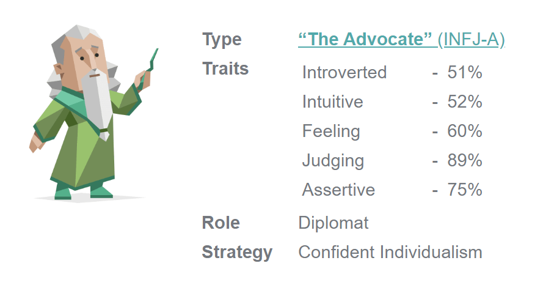
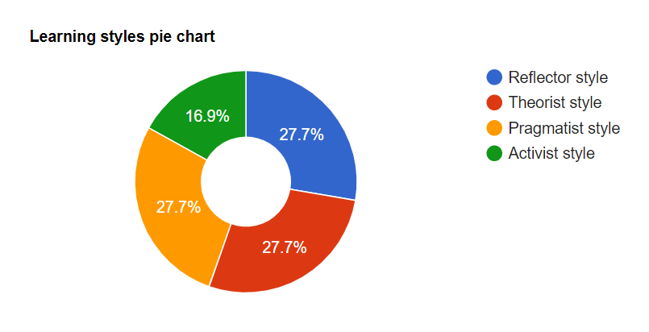
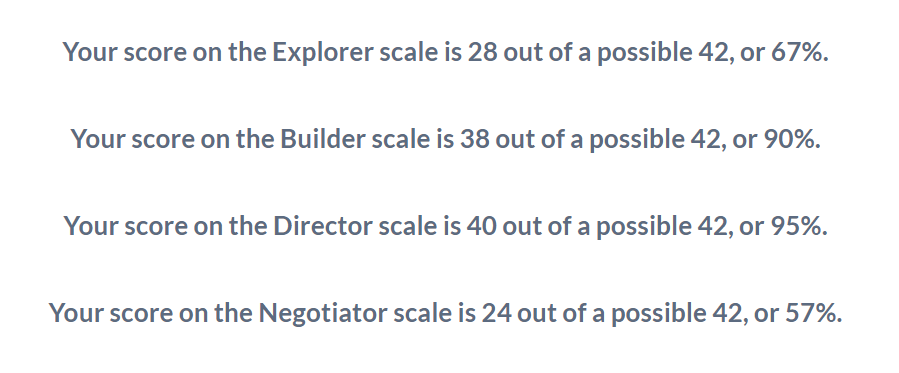

INTEREST IN IT
1) What is your interest in IT?
Artificial Intelligence, Machine Learning and Quantum Computing. Those fields are fascinating, almost magical (quantum tunnelling and entanglement is like something straight out of an Alice in Wonderland book). These technologies will completely revolutionise the world. Imagine an AI superintelligence that is smarter than all the humans that ever existed. What will AI be capable of? Will Earth transform into a paradise where humans are free of disease, pollution and poverty? A peaceful world is a possibility. Much like the development of classical computers, where the offshoot technologies such as mobile phones and laptops were not predicated, it is hard to know what future technologies will be developed from quantum and AI research.
2) When did your interest in IT start?
I’ve loved computers all my life. They have dramatically improved our world. A world without computers is foreign to me. Out of curiosity I learnt about Alan Turning, Tim Berners-Lee, Bill Gates, Steve Wozniack, Steve Jobs, Vint Cerf and Robert Khan, but I never learnt about the hardware or software! Recently, however, I've begun reading about the emergence of Artificial Intelligence, Machine Learning and Quantum Computing. I've always loved quantum science because I'm curious to know how reality works. These new technologies have motivated me to understand computer science and mathematics. Scientists are creating things that were once only science fiction. It’s an incredible time to be alive.
3) Was there a particular event or person that sparked your interest?
It’s a culmination of events. I am currently undertaking a Certificate 2 in Electrotechnology and learning all about circuits and electricity. I thought about becoming an electrical engineer or electrician. My teacher told me to study programming because of the emergence of the Internet of Things. I also read and watched a lot of books and documentaries related to computers. Here’s a list of my favourites:
1) The Elegant Universe by Brian Green
2) Life 3.0 by Max Tegmark
3) Superintelligence by Nick Bostrom
4) Programming the Universe by Seth Lloyd
5) Our Mathematical Universe by Max Tegmark
6) Ghost in The Wires by Kevin Mitnick
7) Digital Fortress by Dan Brown
8) Jurassic Park by Michael Crichton
We have well and truly entered the computer age. Over the last 20 years, there have been many break-throughs in technology and the future looks bright. I hope I’m alive to see AI superintelligence. I believe it’s important to be computer literate, appreciate technology and use it in a safe and appropriate manner.
4) Why did you choose to come to RMIT?
RMIT is one of the best universities to study computers and engineering in Australia. My sister studied Civil Engineering at RMIT and many of my friends are RMIT graduates. RMIT has a great reputation for high quality education throughout the world and their facilities are modern and outstanding. RMIT is working with ARC Centre of Excellence for Quantum Computation and Communication Technology as well. RMIT offers a computer science course completely online and their platform is easy to navigate.
Link: RMIT Quantum Research: RMIT.Quantum
5) What do you expect to learn during your studies?
I’d like to learn as much as I can about computer science. I want to have a deep understanding of the following: Java, JavaScript, Python, C, C++, computer hardware, robotics, artificial intelligence, data science, mathematics, machine learning, quantum computers, logical thinking, leadership and teamwork skills. I’m particularly interested in gaining knowledge on AI and quantum computers. I’d also like gain practical experience in these fields.

IDEAL JOB
The job advertisement: IBM Quantum Researcher: Link: IBM.Job PDF: IBM.pdf
1) The position:
IBM is a leader in quantum research (IBM Q) and artificial intelligence (IBM Watson). The company is developing a full-stack quantum computer, consisting of all relevant hardware and software. Quantum computers are being designed to perform complex calculations that would overwhelm any conventional supercomputer. This next-generation computer could spur ground-breaking developments in a variety of fields. Imagine unlocking the secrets of molecules and developing materials that are more efficient and durable. Finding algorithms that will help us cope better with natural disasters and pandemics. Developing quantum computers will pave the way for the emergence of general and superintelligent AI.
I’d like to join a team that is dedicated to applying this new science to some of today's most complex challenges, including medicine and wildlife conservation. IBM is already using its Cloud computing technology to help protect endangered rhinos in South Africa.19 The IBM position ticks all my boxes. It is for a person interested in quantum circuits, superconducting qubits (quantum bits), quantum software architecture, cryoelectronic circuit design, quantum microwave engineering and quantum engineering.
2) Skills, qualifications and experience required for the position:
The researcher must possess at least a graduate qualification (Ph.D) in computer science, at least two years’ experience as a quantum computing researcher and five years’ experience in computer science research. Universal quantum computers use the phenomena of superposition, entanglement and interference to create states that increase exponentially with number of qubits. The researcher must have skills related to quantum circuits and an ability to solve algorithmic problems and coding (in C/C++ and Python). Quantum circuits are a sequence of quantum gates, which are reversible transformations, unlike in a classical computer.
Quantum computers can only function at temperatures close to absolute zero, which is colder than the vacuum of space, hence the researcher must demonstrate the ability to understand and work with components of dilution refrigerators (there are over 2000 components in a quantum computer). Responsibilities include developing algorithms and tools to improve IBM’s compiling platform (quantum circuit placement/scheduling, libraries), publishing research results and collaborating with other researchers.
3) The skills, qualifications and experience I currently have:
I’m studying an undergraduate degree in computer science, getting a Certificate 2 in electrotechnology (circuits, refrigeration, fabrication), learning about AI, Python, quantum mechanics/chemistry/computing through IBM and MIT online courses, and applying for work-experience positions. I have some experience working with Nuclear Magnetic Resonance Spectrometers and organic chemistry.
Building quantum systems is still in its infancy but the demand for researchers is increasing. Quantum computing was a purely theoretical subject only a few decades ago. At the moment, IBM has a quantum computer that contains 65 qubits. It plans to have a 1000-qubit computer by 2023 and a 1 million-qubit computer by 2030. The CSIRO predicts the quantum technology industry could be worth over $4 billion in revenue for Australia by 2040 ($86 billion globally) and create 16,000 new jobs. And the University of NSW has launched a 'Bachelor of Quantum Engineering.' Currently, there aren’t enough qualified engineers to fill the jobs needing quantum skills in Australia - or anywhere in the world.26
The IBM Quantum Computer is available on their cloud platform and provides an introductory path to programming on quantum computers using Qiskit (an open source software development kit (SDK)), Python and Jupyter Notebook. IBM lets anyone learn quantum computing online via their Qiskit textbook
(Qiskit.Book).
You can build quantum circuits and run them on real quantum hardware - there are three processors on the IBM Q Experience, two 5-qubit processors and a 16-qubit processor. There is even a GitHub for Qiskit (GitHub.Qiskit) The company is active in educating the next generation of quantum developers and create courses, events and internships regularly. As the University of NSW is the only institution in the world teaching quantum computing, much of the education needed to deeply understand this field will be gained through a variety of online courses and work experience.
Link: IBM Q Experience: IBM.Quantum and UNSW Degree:
UNSW.Quantum
5) A plan to obtain the skills, qualifications and experience required for the position:
Step 1: Get a graduate degree in Computer Science from RMIT and be fluent in the major computer languages including Python, C, C++ and Java. I can do this by getting a Bachelor of Information Technology and then a Masters in Computer Science. I will need to have a GPA of at least 2.0 out of 4.0 for graduate entry. I then need to enrol in a Ph.D course for computer science. Entry to a Ph.D requires a master degree that includes a research component comprised of at least 25% of a full-time academic year (or part-time equivalent) with an overall distinction average. I'd like to do a Ph.D in quantum software development. Hopefully by this time RMIT will have a quantum computer. Otherwise I can do research at Lockheed Martin's STELarLab in Melbourne or study at the University of NSW (which has a quantum computer).
Links: RMIT Masters:
RMIT.Masters
and RMIT Ph.D: RMIT.PhD
Step 2: Learn mathematics for machine learning, data analysis, AI and quantum mechanics from online courses. This includes a deep understanding of linear regression, statistics and probability. Learn quantum computing. I am already undertaking some courses through Coursera, IBM and MIT. Later I will do courses with Google and EdX. There is a growing number of high quality online courses available to broaden my computer skills.
Step 3: Learn about electronics (get a Certificate 2 in Electrotechnology). Take subjects in Electrical Engineering/Electromagnetic Engineering.
Step 4: Gain experience in the field of quantum computers. Apply for work-experience at various companies and organisations dealing with quantum computers, AI and machine learning, including IBM, D-Wave, Google, Amazon, Lockheed Martin (STELarLab in Melbourne CBD) and the University of NSW.
Links: STELarLab: STELar.Lab
PROJECT IDEA
OVERVIEW
The format and delivery of education has remained largely unchanged for the last 100 years. Mobius Education (named after the surface with only one side, pictured above) transforms the subject of mathematics into a journey of wonder, fun and exhilaration. It's maths education for the 21st century child using the latest technologies including AI, machine learning, virtual reality, augmented reality, gaming, animation and HD video including animated eBooks. The student (player) is transported from their classroom into worlds where they see how maths really works. No more tedious, boring classrooms where teachers talk for hours and scribble on a blackboard. At Mobius, children learn maths in an interactive and natural manner, making them fall in love with the beauty of formulas and calculations. By the end of the course, students will achieve a high level of mathematical fluency and be able to flourish in an ever evolving world.
MOTIVATION
Maths fluency is low
Maths is a language, like English, but even employed people have problems understanding and speaking it. According to data from ‘Programme for the International Assessment of Adult Competencies (PIAAC),’ employed people aged 15 to 64 years who worked in 'Professional, Scientific and Technical Services' had numeracy skills that were high (70% at Level 3 or above), but those working in Construction, Administration and Manufacturing were low (44%, 39% and 42% at Level 3 or above respectively).2
Numeracy levels among the general Australian population (both employed and unemployed), were low. Close to 6.5% (1.1 million) of Australians had numeracy skills at Below Level 1, 15% (2.5 million) at Level 1, 32% (5.4 million) at Level 2, 31% (5.2 million) at Level 3, 11% (1.8 million) at Level 4 and 1.4% (230,000) at Level 5.2

Figure 3. Proportion of Australians at each numeracy level(2011-12).2
Costs of innumeracy
Mathematics has allowed society to advance to a point where the average lifespan of a child born in 2000 is 100 years old.3 Without mathematical skills, engineering and science will not progress, leading to stagnation and serious consequences to our species in the event of a global pandemic or natural disaster such as a volcanic eruption or asteroid collision. Today there is growing shortage of qualified people in the STEM fields. Much of this has to do this a lack of mathematical knowledge.21
The inability to rationally understand statistics, large numbers, graphs and probabilities has also resulted in a population that can be easily manipulated and misinformed in areas of great importance - governmental policies, personal life decisions, medicine and finance. Pseudoscience and conspiracy theories are rising and the recent Covid-19 pandemic has highlighted this well.18 It is more crucial than now than ever to possess a clear, logical way of looking at the world. It is literally a life or death situation at the moment. Lastly, mathematically competent people tend to be wealthier. People with higher scores in numeracy make more money from wages and salaries. In the PIAAC study, 89% of Australian high-income earners had a numeracy level of 3 or higher, compared to only of 29% of low-income earners.2
DESCRIPTION
THE DESIGNER COURSE: Neuroimaging and Psychometric tests
Mobius Maths is a custom designed course for Prep to University students using the latest technologies with lifetime access. To personalise maths education, each child firstly undergoes a single photon emission computed tomography (SPECT) scan to see how blood flows to their brain. We check for any abnormalities and problems every year and enter the data into a brain bank, which a student can access on our online platform. A healthy, well-functioning brain is the foundation of education and a happy life. When the brain is troubled, a child will struggle to be their best selves. Based on the results, the child will be given an AI designed brain diet including supplements (Omega 3 fatty acids, multi-vitamins, etc) and an exercise regime to maximise mental performance. The food that we eat and the amount of exercise we do has a profound effect on how our brain functions.4

Figure 2. SPECT scan of a healthy brain.4
Afterwards, the child takes a psychometric test, beginning in Prep and every 6 months afterwards until they finish the course. The results will be part of a training data set for AI to learn from. Algorithms will generate a personalised course suited to the child’s character, personal interest and learning style. As the student changes and grows, so too does the course, creating a flexible and ever evolving learning environment. She can learn and progress through the course at her own speed. Learning is not a race. Having a deep understanding of maths is the priority at Mobius.
A PERFECT TEACHER: An AI digital assistant
Far too many students sit in a classroom, surrounded by thirty other students, receiving little to no attention from their teacher. At Mobius Education, each child has their own intelligent virtual teacher called MoBi, who guides them through their course until they complete it (with a 100% pass rate per level so there are no learning gaps and the student grasps advanced topics with ease). Mobi ensures the child never feels alone or disorientated. MoBi is similar to Siri, an intelligent assistant from Apple Inc.1 He has a natural-language user interface.

Figure 3. Apple's Siri. An AI virtual assistant.1
MoBi, however, is also equipped with latest data in psychology, biology, neuroscience and of course mathematics (by ingesting all the research papers and books available), as well as the child's input data given during each psychometric test. Not only will he be able to organise his students maths course and keep track of her progress, he'll be able to hold an intelligent, meaningful and emotionally rich two-way conversation with her.
He'll be able to adjust and morph into any character (a warrior, an alien, a character from a favourite book, or even a talking car like Kitt7) to better understand and connect with his student. MoBi will even be able to take physical form using our other products (our computerised teddy bear for example). As the child's personality and learning style changes, so too will MoBi. He will synchronise and align conversations with the interests of the maturing child. MoBi is not only the student's guide, but also her friend. He will boost her self-esteem, confidence and learning ability, ensuring she excels not only in maths, but in life. MoBi will be the child's confidant during the learning journey. This personal touch is often missing in today's education.
IT'S PLAY TIME: Games, Cartoons, ebooks, VR, AR, Collector Cards, Comics, Movies, T.V Shows and Toys
At Mobius Maths, we take fun seriously. Education is a positive, playful and entertaining experience. Obtaining knowledge is about understanding and appreciating the world, being curious and solving problems. When we are children, we learn to speak a language so we can communicate and express our feelings to our family. It was an easy, immersive and interactive experience. We didn't even realise we were learning such a complex subject with its own grammar and syntax. Maths needs to be taught in a similar manner. However, the current school system concentrates on rote memorisation and competition, two things that create anxiety and hatred towards the subject. Negative thinking decreases blood flow to the brain, making it harder to learn and gain deep understanding.4

Figure 3. SPECT scan of an individual feeling grateful and hateful.4
At Mobius, creativity and enjoyment is at the core of our learning experience. Today, the most common tool for complex maths visualization in the classroom is the TI-84+ calculator. That's why at Mobius we've developed a blended learning model that captures a child's attention and helps them visualise maths, the key to truly understanding it. The maths skills they gain are applicable to the real world.
Our products include:
Games: Traditional, Augmented Reality and Virtual Reality:
Our gaming platform simulates different experiences for each grade level. We incorporate traditional gaming styles, as well as the latest in virtual and augmented reality.10 As an industry, video games generated $US119.6 billion in revenue during 2018, and the demand for thrilling games is only increasing.24 The ever popular Pokemon Go has 60 million active users per month.6 At Mobius, we have thousands of high quality simulations to choose from, and all are easily manipulated to suit an individual student, i.e. AI designs the game with the child.
Maths games aren't simply about doing equations. Each product explores a different part of our world. It's hands on and practical. For example, children interested in space technology can help build a space rocket at NASA (like in the Kerbal Space Program12) then learn calculus and trigonometry. A child excited by war games can help orchestrate an army to destroy an enemy, then learn about statistics and probability. The child's imagination is the only limit.

Figure 4. Pokemon Go: An AR game.6
Ebooks, Comics and Collector Cards: Augmented Reality, Animated and Self-talking:
No more lugging around heavy text books. At Mobius, each child has their own digital library for a lifetime. Books are an important part of the learning experience. Creative stories are how we communicate to the world and convey information. Taking a lesson from Harry Potter, one of the world's best-selling children's book series with over 400 million copies sold,8 we at Mobius have created a line of entertaining children's books with characters that move, speak and even jump out of the book (via augmented reality). Auto-reading features allows the student to follow along at whatever speed they find comfortable, while a natural sounding voice reads to them.

Figure 5. Harry Potter and the Philosopher's Stone illustrated and animated ebook.8
We also have a range of mathematical collector cards (digital and paper) that are illustrated, animated and use AR technology. Inspired by the Pokémon Collector Cards, the Mobius Collector Cards feature a range of cute Anime characters for young children and beautiful illustrations for older students.
Movies and Series: Documentaries, T.V. Shows and Cartoon Series:
People are spending more time streaming video content.24 Entertaining cartoons are an effective learning tool for teaching maths to young children and adults alike. Colourful animations mixed with funny, novel and emotionally charged storylines increases memory retention.14 At Mobius, we have an exciting range of cartoons to suit every taste, including Pixar-styled animations with 3D rendering. For older students, we have a range of maths documentaries that rival PBS and Discovery Channel. They educate the student on everything from Sir Isaac Newton's discovery of Calculus to Maxwell's equations for electricity. All topics are covered and easily accessed on our website or other streaming platforms including Netflix, Amazon, YouTube and Facebook.
Toys: Electronics, Robotics and 3D-Printing
Mobius Education incorporates toys and the 'Internet of Things' into learning such as our talking teddy bear, robot, warrior, car, jewellery, watch, jumper etc. It enables MoBi to take a 3D physical form in the real world and interact with the child through touch. For example, through the teddy bear, MoBi can give the child a hug. The child can now take MoBi anywhere there is wireless internet connection, so learning doesn't have to stop at the desk, but can move anywhere the child wants to go.
We also have a range of 3D printed mathematical toys to further help a child visualise mathematics, ranging from simple blocks and triangles to knot theory, regular polyhedra and four-dimensional spaces.

Figure 6. MIT Media Lab's Huggable teddy bear.17
TOOLS, TECHNOLOGIES AND SKILLS
Integrating all these applications onto one user-friendly online platform requires a lot of technologies to work seamlessly. To create these products, computers that have Windows, Mac or Linux installed with high-speed internet access (4G or 5G) are needed.
MoBi the Virtual Teacher
The virtual teacher works primarily on five technologies; Machine Learning, Computer Vision, Speech Recognition, Natural Language Processing (NLP) and Deep Learning. IBM Watson can be trained using large datasets from the students as well as research on psychology, biology, mathematics and neuroscience.
A prototype of MoBi can be built (for free) using IBM Watson Assistant services. Here, an AI conversational agent, i.e. a chatbot, can be created. Using IBM Watson Speech to Text and Text to Speech services, the chatbot can talk with the user via text or voice commands in a natural language conversation. It can be trained to learn and evolve through user feedback and linked to Watson Discovery (unstructured data analysis service). Watson Assistant and Discovery services are hosted on the IBM Cloud platform.
Skills required:
An understanding of Python, artificial intelligence, machine learning, data analysis (including how to input data to avoid a bias output), Natural Language Processing, linear regression, statistics and probability.
Links: Machine Learning: IBM.Machine and Assistant: IBM.Assistant
Website
Developing a user-friendly platform that hosts all the Mobius products, including high quality video streaming, requires IBM Cloud for servers and data centers. Python coding can be written on Jupyter notebook and HTML5 and CSS on Brackets software. Git software and GitHub can be used for maintaining code repositories. A hosting service and domain name will also be needed.
Skills required:
An understanding of Python, HTML5, CSS3, JavaScript, jQuery, Bootstrap, Express.js, React.js, Node.js, Database Theory, MongoDB, MySQL, Command Line and Git.
Links: Jupyter Notebook: Jupyter.Note and Brackets: Brackets.Edit
Ebooks, Comics, Collector Cards, Cartoon, Videos and Games
Illustration/Animation: Creating colourful digital art and animation requires Adobe Illustrator, Photoshop, Animate and Character Animator. Open source animation software options include Blender (for 3D rendering) and Inkscape. A Wacom Cintiq pen display can be used create digital drawings.
Video: A Canon Camera and video-editing software such as Adobe After Affects, Premiere Pro and Rush can be used to create documentaries. Open source editing software options include Lightworks, VSDC or OpenShot.
Games: Coding can be written in Eclipse or IntelliJ for Java and in Jupyter Notebooks for Python. Git and GitHub can be used for code repositories. Oculus Rift is needed for virtual reality and Microsoft's HoloLens for Augmented Reality (including Microsoft Azure Cloud and Unity software). IBM Watson can also provide AI services for virtual reality game design.10
Skills required:
An understanding of children's literature, digital illustration and animation, filming and video-editing. For gaming, experience with Java or Python, Virtual Reality, Augmented Reality and AI.
Links: Adobe: Adobe.Create and Blender: Blender.Animate
Toys
Electrical components, a CPU, hard-drive, etc can be used to create the robotic teddy bear, warrior, car and IoT products. Movements can be programmed using Java or Python. For the jewellery and clothing, Microsoft Azure can deploy secure, scalable Internet of Things (IoT) applications. 3D Printers (Officeworks offers 3D-printing) with PLA, a biodegradable thermos plastic, can manufacture the math toys. Open source 3D design software includes Tinkercad and Autodesk 123D.
Skills required:
An understanding of electronics, robotics, 3D-design, Python, C, C++ and Java.
Links: Tinkercad: Tinkercad.3D and Azure IoT: Azure.IoT
Brain Bank
IBM Watson Discovery can help customise a health regimen for the child by analysing the SPECT scan results and research papers/books on nutrition, exercise and neuroscience. Watson Discovery is an AI technology that can unlock hidden insights in unstructured data. This will help create the brain bank and process brain injury/health reports to students.
Skills required:
An understanding of machine learning, data analysis, linear regression, statistics, probability, neuroscience, nutrition, fitness and medicine.
Links: IBM Discovery: IBM.Discovery
OUTCOMES
Mathematics is a core subject that is taught from Prep to University. However, the delivery does not suit the modern environment, which is saturated with computers, video games, eBooks, VR, AR, and IoT products. All children deserve to understand mathematics. It is a fundamental language that enabled humans to move from straw huts to glass skyscrapers and then the moon. Mathematics needs an update or else humanity will suffer (and go extinct) in the long run. There will be a shortage of technologically skilled people who can innovate and create a better world. Personalised virtual teachers, maths through video gaming, colourful animations and AI designed courses are already being created and will be a reality for children all over the world in the not too distant future.
ABOUT
Name: Dhilrukshi (Dee) Pathmanathan
Student number: s3128962
Student email: s3128962@student.rmit.edu.au
Nationality: Australian Sri-Lankan
Education: VCE, Certificate IV in Small Business, undertaking a Certificate 2 in Electrotechnology and Bachelor of IT.
Languages: English and Tamil.
Hobbies: I just started getting into electronics. I love to play sports of all kinds, especially badminton and swimming. I love scuba diving in the Great Barrier Reef and once met a pod of dolphins. Night diving is a beautiful experience and I’d love to do more all over the world. I really want to see a whale shark too.

"The history of the universe is, in effect, a huge and ongoing quantum computation. The universe is a quantum computer." Seth Lloyd
PERSONALITY
The Myers-Briggs test results

I am an Advocate INFJ-A (Assertive) Personality:
Johann Von Goethe once said, “Treat people as if they were what they ought to be and you help them to become what they are capable of being.” This quote (which was displayed on the results page) sums up how I wish people treated others. I know everyone is here for a reason and that they are enough. They can reach their highest desires if they pursue their goals with determination and persistence. But most people never realise their dreams because they let others destroy their confidence and self-worth. As a result, the world never benefits from their creative minds. A perfect example of this is Alan Turing, the father of modern computers and artificial intelligence. He was abused at school and by authorities for being homosexual, and later committed suicide. Imagine how advanced computers would be if he had lived a long life.
I generally fit into the Advocate personality type, as they want an egalitarian world and are motivated by purpose and meaning, as opposed to material gain and status. That's why I'm learning about computers. One day I can use it to solve problems like disease or pollution. The results showed that I am 51% introverted. I found this interesting because I expected to be around 80% introverted, as I'm quite independent and love spending time alone. I am 52% intuitive, which I agree with. I often use my imagination and like thinking about the future, although I am also practical and realistic in achieving a goal.
The test also showed I was 60% feeling, meaning that I use feelings more often than logical thought to make a decision. I actually respect logical thinking and understand the biological reason why we have gut instincts. The subconscious mind takes in far more information than the conscious mind, and sends that data to us via feelings. Many people have experienced feeling uneasy around certain individuals, only to find out later that the person was dangerous, abusive or mentally unwell. Our species has evolved to pick up subtle body movements and facial expressions that are expressed to us through negative feelings. These feelings can guide us through life, helping us make better, faster decisions, especially in life-threatening situations.5
Team Dynamic:
I am open to other people's ideas and treat people as equals, so I'll play fairly in a team. I will do my share of the work and help others who need it. I am 89% judging as opposed to prospecting, which means I need things to be very organised, structured and planned. This may lead to problems with other team members who are more spontaneous and opportunistic. They may like to improvise while I like things to be predictable and clear. I need to be more flexible and allow for changing ideas. I am assertive and confident most of the time, so will speak my thoughts and want to be heard. I have to take care not to speak over others or interrupt them. The test said I was a diplomat, so I should be able to cooperate and harmonize with others well.
The Honey & Mumford learning style test results

My Primary Learning style: Pragmatic/Theorist/Reflector:
I am equal parts (27.7%) pragmatic, theorist and reflector. I'm only 16.9% activist, which I disagree with because I love learning by doing. That is why I'm studying electrical circuits through a Certificate 2 - it's very hands on. I agree I am pragmatic and enjoy doing things in the real world to truly understand a subject. I learn best when fully immersed in a subject - eating, breathing and sleeping it.
For example, I studied French in a classroom for 4 years and can barely string a sentence together. However, by the time I was four, I could understand Tamil and speak it fluently because my parents spoke it every day. Most children can do this because humans are naturally wired to learn through imitation.11 If school and university courses were like apprenticeships, students would learn at a greater speed and retain more knowledge. I agree that I love to experiment with new ideas and techniques to see if they work. I was always tempted to take things apart and understand how they work. Being curious is important to understanding a subject on a deeper level.
The results also said I'm a theorist. This is a personality trait I wish everyone could have, as the world be more peaceful if everyone thought in an objective and logical manner. Too many people are irrational and base their decisions on zero evidence. I like to understand and make decisions based on factual information and fit things into rational order.
Lastly, I am a reflector. I agree that I tend to be cautious and observe what's going on. I like to do things carefully and analyse information before making conclusions. I often analyse my thoughts and actions and try see the whole forest, not just the trees. That way I am thinking broadly instead of being narrow minded. I enjoy being coached by people who give me insight into my behaviour. It's important for me to improve as a person.
Team Dynamic:
I think my learning style perfectly suits working with others as I like to gain new perspectives. Everyone is a teacher and if you want to learn, they will teach you something. It's a great way to improve yourself. I think logically and, in this respect, understand it is advantageous to collaborate. A branch of mathematics called game theory elegantly explains how entities have an incentive to naturally cooperate, where cooperation is a Nash equilibrium - a situation where any party would be worse off if they altered their strategy.20
The Helen Fisher neuro-chemical-based personality test results

My primary personality type is Director:
The results state that my brain is testosterone dominant. I'm 95% of the Director personality. Women usually don't have the male sex hormone testosterone flooding their brain system. They usually have the female sex hormone oestrogen instead. This is why women tend to make up most of the nursing and counselling roles in society.16 And most men fill the roles for engineering and mathematical jobs, as testosterone has been linked with higher spatial/mathematical abilities.9 A possible reason why Alan Turing committed suicide may be due to the female hormones he was forced to take as a 'cure' for homosexuality. It may have reduced his ability to perform complex mathematics.
But there are exceptions to the rules. There are many women who successfully contribute to highly technical fields. According to anthropologist Helen Fisher, people who have a director personality are very analytical and strategic thinkers. They are tough minded and rarely get emotional. I agree with this completely. I rarely cry and have a thick skin. I love learning about maths, computers, mechanics and engineering. I'm ambitious and driven to master difficult complex subjects. If something is easy, I tend to get bored and lose interest. I'm very sceptical and like to see the facts instead of anecdotal evidence. I've always been a Tomboy.
My secondary personality type is the Builder. I'm 90% of this personality type, which means I like traditional and conventions. I partially agree with this, but only to the extent of law and order. I think society needs to change and improve, not stay stagnant. However, I agree I am a cautious person and try to be ethical. Builders are expressing serotonin in their brain system. Serotonin is the 'happy calm' chemical that is made in the body through exercise, sunlight exposure and diet.27 Builders are people who create lasting bonds in their community and family. I agree with this as I love spending quality time with my family and want to contribute to society in a positive manner. I am usually pretty calm and collected and avoid people who have emotional and/or abusive personalities. Loyalty and kindness are important traits to me.
Team Dynamic:
I have a problem dealing with emotional people. I need to learn to understand them and find an intelligent solution to their problem without dismissing their feelings. Not everyone thinks like me and I need to understand that. It's important to show empathy and not treat people like machines. I prefer working with stable and calm team players, predictable people who share the same values as me. I will get along easily with other builders, as they are hard-working and moral people. However, in this world, I will meet a variety of personalities and need to learn to work with everyone.
REFERENCES:
1) Apple (Australia). 2020. Siri. [online] Available at: https://www.apple.com/au/siri/ [Accessed 13 September 2020].
2) Abs.gov.au. 2020. 4228.0 - Programme For The International Assessment Of Adult Competencies, Australia, 2011-12. [online] Available at: https://www.abs.gov.au/ausstats/abs@.nsf/Lookup/4228.0Main+Features402011-12 [Accessed 13 September 2020].
3) ABC News Medical Unit. 2009. Most Babies Born Today May Live Past 100. ABC News. [online] Available at: https://abcnews.go.com/Health/WellnessNews/half-todays-babies-expected-live-past-100/story?id=8724273 [Accessed 13 September 2020]
4) Amenclinics.com. 2020. Mental Healthcare Clinic Focusing On Your Brain Health | Dr. Amen. [online] Available at: https://www.amenclinics.com/ [Accessed 13 September 2020].
5) Association for Psychological Science - APS. 2020. Intuition – It’s More Than A Feeling. [online] Available at: https://www.psychologicalscience.org/news/minds-business/intuition-its-more-than-a-feeling.html [Accessed 16 September 2020].
6) Business of Apps. 2020. Pokémon GO Revenue And Usage Statistics (2020). [online] Available at: https://www.businessofapps.com/data/pokemon-go-statistics/#:~:text=Apptopia%20Pok%C3%A9mon%20GO%20stats%20showed,12%20million)%20were%20active%20daily. [Accessed 13 September 2020].
7) En.wikipedia.org. 2020. KITT. [online] Available at: https://en.wikipedia.org/wiki/KITT [Accessed 13 September 2020].
8) Fortune. 2020. Harry Potter At 20: Billions In Box Office Revenue, Millions Of Books Sold. [online] Available at: https://fortune.com/2017/06/26/harry-potter-20th-anniversary/ [Accessed 13 September 2020].
9) Gouchie, C. 1991. The relationship between testosterone levels and cognitive ability patterns. PubMed. Available at: https://pubmed.ncbi.nlm.nih.gov/1745699/ [Accessed 17 September 2020].
10) IBM MediaCenter. 2020. Developing Virtual Reality Video Games With Watson. [online] Available at: https://mediacenter.ibm.com/media/Developing+virtual+reality+video+games+with+Watson/0_hryyj8mq> [Accessed 15 September 2020]
11) Ilabs.washington.edu. 2020. [online] Available at: http://ilabs.washington.edu/meltzoff/pdf/99Meltzoff_BornToLearn.pdf [Accessed 15 September 2020].
12) Kerbalspaceprogram.com. 2020. Kerbal Space Program – Create And Manage Your Own Space Program. [online] Available at: https://www.kerbalspaceprogram.com/ [Accessed 13 September 2020].
13) M. (2009, October 22). Mobius Strip; Animated .GIF Image. CGTalk. [online] Available at:http://forums.cgsociety.org/t/mobius-strip-animated-gif-image/1371445 [Accessed 18 September 2020].
14) National Institutes of Health (NIH). 2020. How Novelty Boosts Memory Retention. [online] Available at: https://www.nih.gov/news-events/nih-research-matters/how-novelty-boosts-memory-retention#:~:text=If%20something%20novel%20grabs%20your,have%20a%20memory%2Dboosting%20effect. [Accessed 13 September 2020].
15) New Scientist. 2020. Quantum Computers May Be Destroyed By High-Energy Particles From Space. [online] Available at: https://www.newscientist.com/article/2252933-quantum-computers-may-be-destroyed-by-high-energy-particles-from-space/ [Accessed 18 September 2020].
16) N. T. 2019. Why are there so few men in nursing? Nursing Times. Available at: https://www.nursingtimes.net/archive/why-are-there-so-few-men-in-nursing-03-03-2008/ [Accessed 17 September 2020].
17) Phys.org. 2020. MIT's Huggable Robot Teddy Enhances Human Relationships. [online] Available at: https://phys.org/news/2008-12-mit-huggable-robot-teddy-human.html [Accessed 13 September 2020].
18) Psychological Science and Conspiracy Theories in the Era of COVID-19: Interview with Karen Douglas and Michael Shermer. 2020. Association for Psychological Science - APS. [online] Available at: https://www.psychologicalscience.org/news/podcast-news/psychological-science-and-conspiracy-theories.html [Accessed 13 September 2020]
19) Spruyt, F., 2020. Protecting Endangered Rhinos With IBM Cloud And Watson Iot. [online] Business Operations. Available at: https://www.ibm.com/blogs/internet-of-things/protecting-endangered-rhinos/ [Accessed 17 September 2020].
20) Tegmark, M., n.d. Life 3.0.
21) The STEM Imperative. 2016. Smithsonian Science Education Center. [online] Available at: https://ssec.si.edu/stem-imperative [Accessed 13 September 2020]
22) Webb, K., 2020. The $120 Billion Gaming Industry Is Going Through More Change Than It Ever Has Before, And Everyone Is Trying To Cash In. [online] Business Insider Australia. Available at: https://www.businessinsider.com.au/video-game-industry-120-billion-future-innovation-2019-9?r=US&IR=T [Accessed 13 September 2020].
24) WIRE, B., 2020. Global Animation & VFX Industry Report 2020-2025: Demand For Animation & VFX Content To Power Immersive Experiences Such As AR & VR Is Growing Exponentially - Researchandmarkets.Com. [online] Businesswire.com. Available at: https://www.businesswire.com/news/home/20200131005198/en/Global-Animation-VFX-Industry-Report-2020-2025-Demand [Accessed 13 September 2020].
25) W3schools.com. 2020. W3.CSS Template. [online] Available at: https://www.w3schools.com/w3css/tryw3css_templates_cafe.htm [Accessed 18 September 2020].
26) UNSW Newsroom. 2020. UNSW To Offer World First Bachelors Degree In Quantum Engineering. [online] Available at: https://newsroom.unsw.edu.au/news/general/unsw-offer-world-first-bachelors-degree-quantum-engineering#:~:text=UNSW%20to%20offer%20world%20first%20bachelors%20degree%20in%20quantum%20engineering,-Twitter%20Facebook%20LinkedIn&text=The%20new%20major%20will%20train,engineering%20of%20the%2021st%20century. [Accessed 18 September 2020].
27) Young, S., 2020. How To Increase Serotonin In The Human Brain Without Drugs. [online] PubMed Central (PMC). Available at: https://www.ncbi.nlm.nih.gov/pmc/articles/PMC2077351/ [Accessed 18 September 2020].